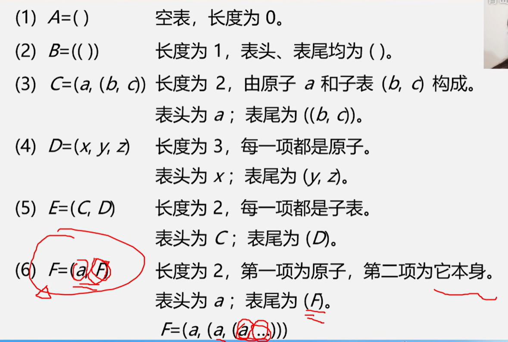
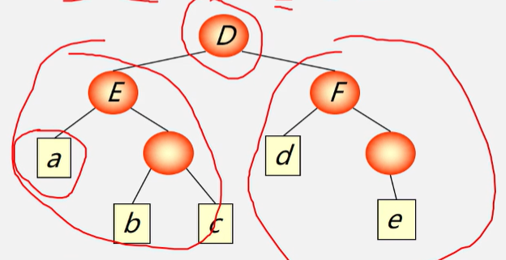

广义表（列表）
是n>=0个元素a0、a1、a2……an-1的有限序列，其中每个ai是原子|广义表
- 广义表通常记作：LS=(a1,a2,...,an)
LS为表名，n为表长，ai为表元素
大写:广义表 小写:原子
| 表头 | 表尾 |
|---|---|
| 原子/子表 | 不是最后一个元素，而是一个子表 |
| 第一个元素a1（n>=1） | 除表头之外的其他元素组成的表 |
| head(LS)=a1 | tail(LS)=(a2,...,an) |

广义表的性质
- 数据元素有相对次序：一个直接前驱 一个直接后驱
- 长度：最外层所包含元素的个数
> C=(a,(b,c))是长度为2的广义表
- 深度：展开后所含括号的重数
> A=(b,c)深度为1，B=(A,d)深度为2，C=(f,B,h)深度为3[(f,((b,c),d))] > > 原子的深度为0，空表的深度为1（空表有一个括号）
- 广义表可以为其他广义表共享；
> 广义表B就共享表A。在B中不必列出A的值，而是通过名称来引用，B=(A)
- 广义表可以是一个递归的表
> F=(a,F)=(a,(a,(a,...))) > > 递归表的深度是无穷值，长度是有限值（2）
- 广义表是多层次结构，广义表的元素可以单元素|子表，而子表的元素还可以是子表...
> D=(E,F) E=(a,(b,c)) F=(d,(e)) > >

广义表与线性表的区别
广义表是线性表的推广，线性表是广义表的特例
广义表结构灵活，可以兼容线性表、数组、树、有向图...
二维数组的每行/每列作为子表处理时，二维数组=一个广义表
树、有向图也可以用广义表来表示
广义表的基本运算
- 求表头 GetHead(L)[非空广义表的第一个元素，可以是一个原子/一个子表]
- 求表尾 GetTail(L)[非空广义表除去表头元素以外其他元素所构成的表。表尾一定是一个表]
> D=(E,F)=((a,(b,c)),F) > > | GetHead(D)=E | GetTail(D)=(F) | > | -------------------------- | -------------------- | > | GetHead(E)=a | GetTail(E)=((b,c)) | > | GetHead(((b,c)))=(b,c) | GetTail(((b,c)))=() | > | GetHead((b,c))=b | GetTail((c))=(c) | > | GetHead((c))=c | GetTal((c))=() | > > 表尾自带一个（）广义表本身也有一个（）